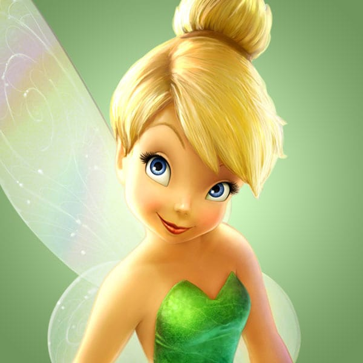

There is conflicting information on what creatures are classified as, as fairies can represent either a group of mythical creature or just a single one, so for the sake of simplicity, the fairy will be treated as its own entity here rather than a group of beings. Fairies are small beings which hold magical powers.
Fairies are usually described as being very small, and oftentimes they have wings on their backs. Because of how small they are, they are oftentimes seen as delicate beings, but in truth they are also quite powerful due to the magic they possess. They can be anywhere from the size of a human being all the way down to three inches, so there is a lot of leniency, of sorts, when it comes to how big a fairy is. Despite their size, however, they have been said to have many powers, such as telling fortunes. They are also fiercely protective of certain plants, and adore them dearly.
One of the most famous fairies in media is Tinker Bell. Originally from the 1904 play “Peter Pan” by J. M. Barrie, and the corresponding novel, and further popularized by the 1953 film of “Peter Pan” by Walt Disney, this small blonde-haired, green-outfitted character has captured the hearts of many people growing up through several generations. At this point in time, she even has her own line of movies from Disney, with six movies in total. The movies consist of the world of Tinker Bell, which shows just how far this character has come; she has gone from being a “side character” to being the center of an entire film franchise. This may be due to the fact that fairies are popular among young children, and children are the target audience of this franchise.
Disney’s animated version of Tinker Bell
Return to the top of the page
Browse the list of mythical creatures.